Este manual recorre la consola de {{PRODUCTO}} en el orden en que se prepara una flota: quién entra, cómo se organizan los equipos, qué se les aplica y cómo se opera el día a día.
Los nombres en negrita sin serifa son los rótulos tal como aparecen en la consola. Las capturas son de un ambiente de demostración con datos ficticios. Las secciones marcadas Llega con… describen funciones que se integran en la siguiente versión; sus pasos y capturas se completarán entonces.
1 · Acceso
Cada persona entra con su usuario y ve solo lo que su rol permite
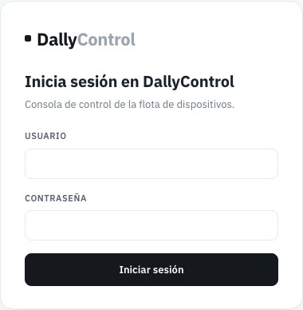
Figura 1. Pantalla de inicio de sesión.
Iniciar sesión
Abra la dirección de la consola en un navegador actualizado.
Escriba Usuario y Contraseña y pulse Iniciar sesión.
Si es su primer ingreso, o un administrador le cambió la contraseña, aparece Define tu contraseña. Escriba una de 8 caracteres o más en Nueva contraseña y Confirmar contraseña, y pulse Establecer contraseña. La consola vuelve al inicio de sesión para entrar con la nueva.
Tras 5 intentos fallidos la cuenta se bloquea 5 minutos; cada fallo adicional duplica la espera, hasta 30 minutos. Durante el bloqueo la consola responde «Usuario o contraseña incorrectos» aunque la clave sea correcta. No hay enlace de recuperación en la pantalla de inicio: un administrador restablece la contraseña desde Usuarios.
El menú
Entrada
Para qué sirve
Quién la ve
Resumen, Tablero
Estado general de la flota
Todos
Carpetas
Organización de los equipos y su política
Todos; modificar exige permiso de flota
Dispositivos, Mapa
Lista, ficha y ubicación de los equipos
Todos, dentro de su alcance
Políticas
Configuración que se aplica a los equipos
Permiso «Ver y editar políticas»
Aplicaciones
Biblioteca e instalación
Permiso «Ver aplicaciones»
Anuncios
Mensajes a los teléfonos
Todos
Reportes, Alertas, Geocercas
Informes, avisos y zonas
Permiso de flota
Scripts
Acciones reutilizables
Permiso «Crear, editar y eliminar scripts»
Inscribir
Alta de equipos
Permiso «Inscribir dispositivos»
Usuarios
Cuentas de la consola
Permiso «Gestionar usuarios»
Roles, Ajustes
Permisos por rol y parámetros del sistema
Administradores con permiso de ajustes
Auditoría
Registro de acciones
Permiso «Ver la auditoría de acciones»
Ayuda
Manuales y búsqueda por tema
Todos
Al pie del menú están el nombre del usuario, el cambio de tema Claro u Oscuro y Cerrar sesión. El botón ? de cada pantalla abre la sección de este manual que la explica.
2 · Resumen y Tablero
Dos pantallas muestran el estado de la flota sin abrir ningún equipo
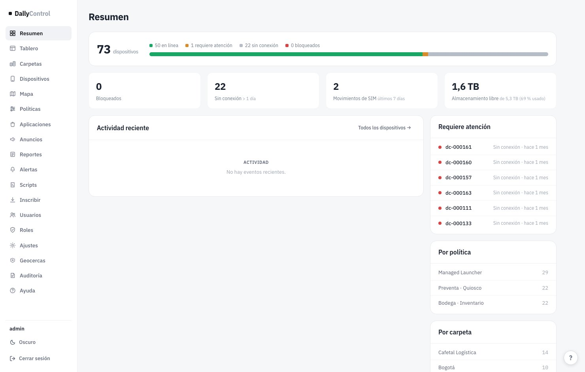
Figura 2. Pantalla «Resumen»: barra de estado de la flota, fichas y paneles.
Resumen responde «¿hay algo que atender ahora?». Tablero da la relación de los dispositivos configurados, con gráficas por carpeta, política, estado, versión del agente y versión de Android. Ambas se actualizan solas cada 30 segundos y muestran solo los equipos del alcance del usuario.
Cómo se cuentan los equipos
Indicador
Definición
En línea (Activos en el Tablero)
Canal en vivo abierto, o último reporte hace 20 minutos o menos.
Requieren atención
Entre 20 minutos y el umbral de «sin conexión», o reportando con una advertencia.
Sin conexión
Sin canal en vivo y sin reportar por más del umbral, que por defecto es 1 día, o nunca reportó.
Bloqueados
Equipos cuyo último reporte indica que están bloqueados.
Fichas y paneles del Resumen
Bloqueados, Sin conexión, Movimientos de SIM de los últimos 7 días y Almacenamiento libre. La ficha de sin conexión abre la lista de dispositivos.
Actividad reciente: los últimos eventos de los equipos, como encendidos, instalaciones, cambios de red y retiros de SIM.
Requiere atención: hasta 6 equipos que no están en línea, los más antiguos primero.
Por política, Por carpeta, Por versión de Android y Estado de apps (Al día, Versión distinta, Con fallos).
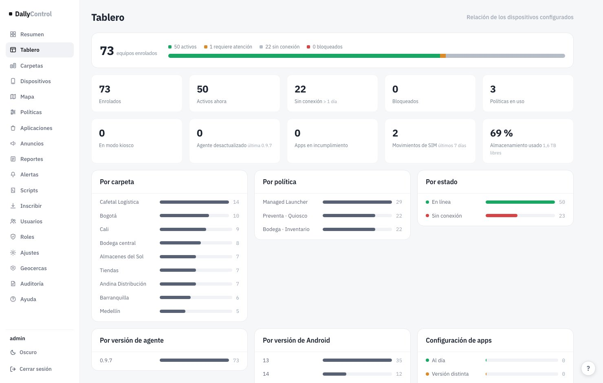
Figura 3. Pantalla «Tablero»: fichas de equipos enrolados, activos, políticas en uso, quiosco y agente.
El Tablero agrega Enrolados, Políticas en uso, En modo kiosco, Agente desactualizado y Apps en incumplimiento. El intervalo de actualización y el umbral de sin conexión se cambian en Ajustes, panel Resumen (tablero).
3 · Usuarios
Un usuario se define por su tipo y por las carpetas que maneja
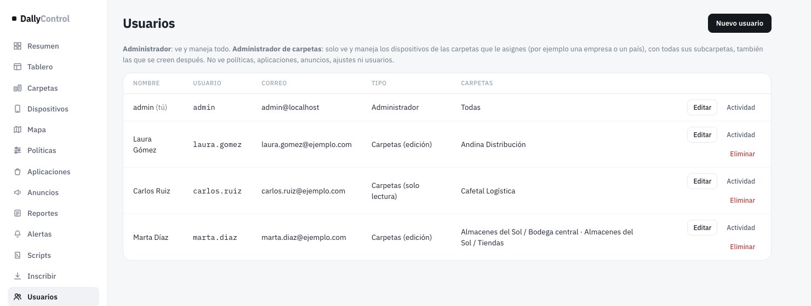
Figura 4. Pantalla «Usuarios». La columna «Tipo» indica el rol y «Carpetas», el alcance.
Tipos de usuario
Opción del campo «Tipo»
Qué puede hacer
Administrador (todo)
Ve y maneja toda la flota y todos los ajustes.
Carpetas — con edición (modifica políticas y carpetas)
Maneja los equipos de sus carpetas, sus políticas, aplicaciones y usuarios. No ve Ajustes, Roles ni Auditoría.
Carpetas — solo lectura (ver y acciones seguras)
Ve los equipos de sus carpetas y ejecuta acciones seguras, sin las que interrumpen al usuario.
Rol personalizado…
Lo que defina el rol elegido (capítulo 4), sobre toda la flota o sobre carpetas.
Crear un usuario
En Usuarios pulse Nuevo usuario.
Complete Nombre, Usuario (para entrar) y, si quiere, Correo (opcional). El usuario admite de 3 a 60 caracteres: letras, números, punto, guion o @.
Escriba una contraseña temporal de 8 caracteres o más en Contraseña y Repite la contraseña.
Elija el Tipo. Con Rol personalizado… elija además el Rol; la lista Qué podrá hacer con este rol lo resume.
En Carpetas que maneja (con todas sus subcarpetas) marque las carpetas. Marcar una cubre sus subcarpetas, también las que se creen después.
Pulse Guardar. La persona deberá definir su propia contraseña en el primer ingreso.
Otras tareas
Tarea
Cómo
Restablecer una contraseña
Editar, escriba la nueva en Contraseña nueva (vacía = no cambia) y repítala, Guardar. Se cierran las otras sesiones de ese usuario y debe definir una propia al entrar.
Cambiar tipo o carpetas
Editar, cambie y Guardar.
Ver qué hizo un usuario
Actividad abre sus acciones registradas. Exige el permiso de auditoría.
Retirar el acceso
Eliminar y confirme. No existe «desactivar»: para un retiro temporal, cambie la contraseña.
Reglas que aplica el servidor
Debe quedar al menos un administrador. Nadie puede eliminar su propio usuario.
Nadie puede asignar un rol con más permisos que el suyo.
Un usuario de carpetas con permiso de usuarios solo ve y asigna las carpetas que él administra, y no puede crear administradores.
Solo un administrador puede dar acceso a toda la flota.
4 · Roles y permisos
Cada casilla de un rol es un permiso que el servidor comprueba en cada operación
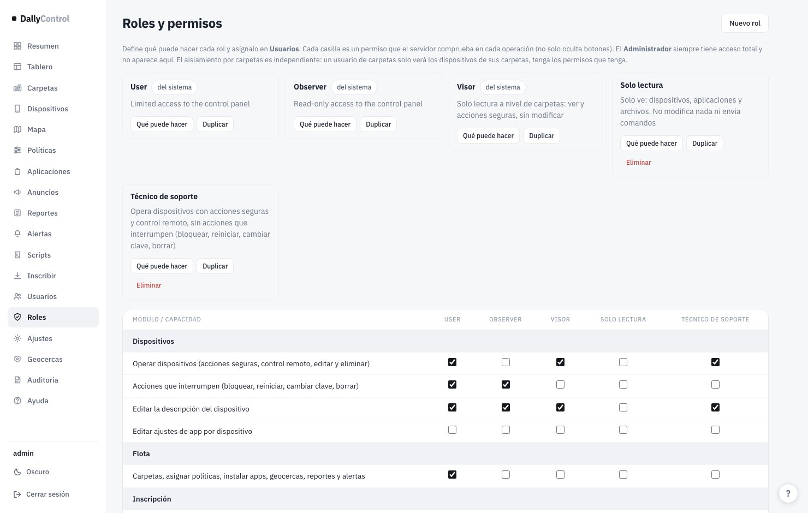
Figura 5. Pantalla «Roles y permisos»: tarjetas por rol y matriz de permisos.
Los permisos no solo ocultan botones: el servidor rechaza la operación si el rol no la permite. El Administrador siempre tiene acceso total y no aparece en esta pantalla. El aislamiento por carpetas es independiente del rol.
Crear un rol
En Roles pulse Nuevo rol.
Escriba el Nombre, de 3 a 50 caracteres.
En Partir de elija una plantilla (En blanco, Solo lectura, Técnico de soporte, Operador de flota) o copie un rol existente.
Pulse Crear rol. Ajuste sus casillas en la matriz y pulse Guardar cambios.
Asígnelo en Usuarios con el tipo Rol personalizado….
En cada tarjeta, Qué puede hacer lista en lenguaje llano lo que el rol permite y lo que no, y avisa si un permiso no tiene efecto sin otro. Duplicar crea una copia. Eliminar solo aparece en roles que no son del sistema y exige que ningún usuario lo tenga asignado.
Permisos de la matriz
Módulo
Permiso, tal como aparece
Dispositivos
Operar dispositivos (acciones seguras, control remoto, editar y eliminar)
Acciones que interrumpen (bloquear, reiniciar, cambiar clave, borrar). Requiere el anterior.
Editar la descripción del dispositivo · Editar ajustes de app por dispositivo
Flota
Carpetas, asignar políticas, instalar apps, geocercas, reportes y alertas
Inscripción
Inscribir dispositivos (códigos y tokens)
Políticas
Ver y editar políticas · Crear políticas nuevas · Duplicar y eliminar políticas
Aplicaciones
Ver aplicaciones · Agregar, editar y eliminar aplicaciones · Agregar, editar y eliminar versiones
Archivos
Ver archivos · Subir, editar y eliminar archivos y APK
Scripts
Crear, editar y eliminar scripts
Usuarios
Gestionar usuarios (sin dar más permisos que los propios)
Auditoría
Ver la auditoría de acciones
Ajustes
Cambiar los ajustes del sistema
Todo rol incluye siempre ver los dispositivos de su alcance: estado, ubicación, eventos y aplicaciones instaladas.
Recomendación. Dé el permiso de acciones que interrumpen solo a quien deba bloquear, reiniciar o borrar equipos. Quien no lo tiene no ve esos botones.
5 · Carpetas y herencia
La carpeta decide la política del equipo y quién lo administra
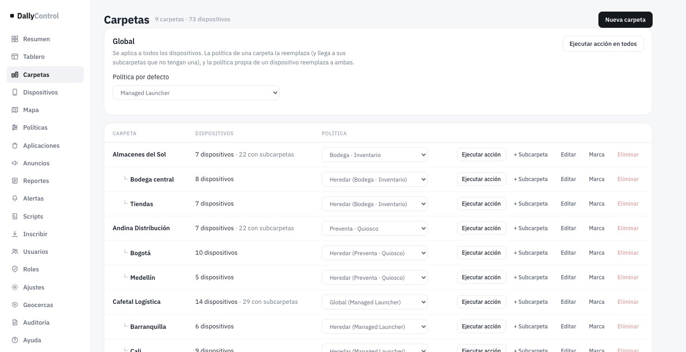
Figura 6. Pantalla «Carpetas». Cada fila muestra sus dispositivos y la política propia o heredada.
Las carpetas forman un árbol: por país, cliente, agencia o tipo de equipo. Un equipo está en una sola carpeta. La carpeta sirve para tres cosas: asignar la política, limitar qué ve cada usuario y dirigir acciones, anuncios, geocercas y reportes.
Cómo se decide la política de un equipo
Figura 7. Orden de herencia. Cambiar la política de una carpeta alcanza a toda su rama.
Tareas
Tarea
Cómo
Crear una carpeta
Nueva carpeta: Nombre, Dentro de (nivel superior o una carpeta) y Política. Crear. En una fila, + Subcarpeta crea una hija.
Asignar política a una carpeta
Selector de la columna Política. La primera opción, Heredar o Global, la deja sin política propia. Se aplica al instante.
Definir la política global
Panel Global, selector Política por defecto.
Renombrar o mover
Editar. Cambiar Dentro de mueve la carpeta con su contenido; los equipos toman la política que les corresponda.
Eliminar
Eliminar. Solo si no tiene dispositivos propios; sus subcarpetas suben un nivel.
Mover equipos a una carpeta
Desde Dispositivos (capítulo 6).
Ejecutar una acción en toda la carpeta
Ejecutar acción. Incluye sus subcarpetas (capítulo 14).
Marca por carpeta
El botón Marca tiene dos pestañas. Consola define el logo y el nombre que ven en el encabezado los administradores de esa carpeta. Quiosco define logos, fondo y número de soporte para los equipos de esa carpeta que estén en quiosco. Lo que queda vacío se hereda de la carpeta superior.
Diseñe el árbol antes de inscribir. Un nivel por cliente o país y otro por operación suele bastar. El nombre de una carpeta puede repetirse bajo otra, no entre hermanas.
6 · Dispositivos
La lista encuentra y agrupa equipos; la ficha concentra todo sobre uno
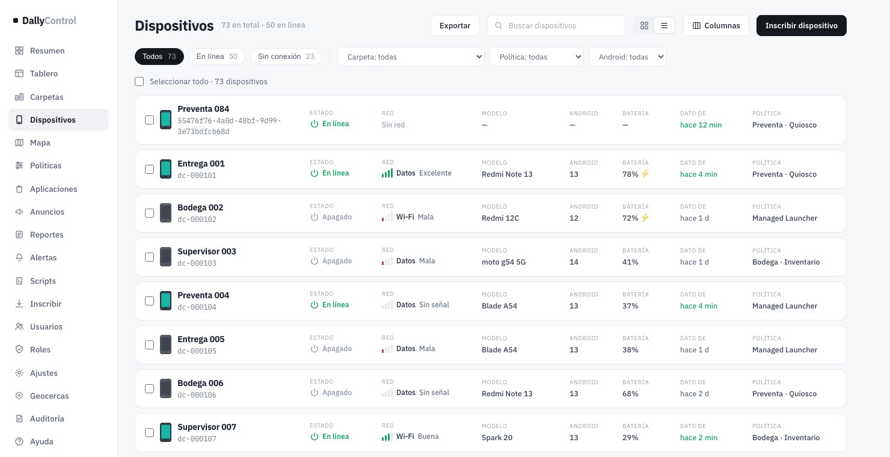
Figura 8. Pantalla «Dispositivos» en vista «Lista», con filtros y columnas.
Buscar y filtrar
Buscar dispositivos busca por número, nombre, IMEI y serie.
Los chips Todos, En línea y Sin conexión filtran por estado. ⚠ Duplicados aparece cuando dos filas comparten el identificador de hardware.
Los desplegables Carpeta, Política y Android acotan la lista. Una carpeta incluye sus subcarpetas.
El conmutador Cuadrícula o Lista cambia la vista. En lista, Columnas elige y ordena las columnas; la elección se guarda por usuario en el navegador.
Exportar
Exportar abre Exportar dispositivos. Elija Qué exportar (todos, lo que muestra la tabla o los seleccionados) y el Formato: Excel con hojas de resumen, carpetas y conexiones, o CSV con el separador que prefiera. Descargar genera el archivo.
Acciones sobre una selección
Marque equipos, o use Seleccionar todo. La barra de selección ofrece:
Botón
Qué hace
Acciones
Abre las acciones masivas (capítulo 14).
Actualizar ahora
Pide a los equipos que reporten de inmediato batería, almacenamiento y red.
Mover a carpeta
Los pone en una carpeta. Toman su política, salvo que tengan una propia.
Cambiar política
Fija una política propia, con prioridad sobre la carpeta. Heredar de la carpeta / global la quita.
Eliminar
Quita los equipos de la consola. Si el teléfono sigue inscrito, reaparece solo: para retirarlo de verdad, restablézcalo de fábrica antes.
La ficha del dispositivo
Figura 9. Ficha de un dispositivo.
La columna izquierda muestra el estado de conexión, el botón Actualizar ahora, el nombre editable, los botones rápidos (Sincronizar ahora, Remoto, Bloquear, Instalar apps de la política) y los grupos Estado, Ubicación, Hardware, Red y Gestión. Debajo están las tarjetas Carpeta y política, Estado de la política y Última falla de conexión.
Pestaña
Contenido
Control
Órdenes remotas, quiosco, compartir datos, acciones rápidas, script e historial de órdenes.
Remoto
Ver y controlar la pantalla.
Diagnóstico
Foto del estado del teléfono: sonidos, notificaciones, alarmas, cierres del agente.
Aplicaciones
Aplicaciones instaladas; desinstalar; mostrar una aplicación en el quiosco de ese equipo.
Actualizaciones
Android, parche de seguridad, y la línea de tiempo de instalaciones.
Historial
Gráficas de conexión, batería, señal y almacenamiento de 7 o 30 días.
Uso de apps
Tiempo de uso por aplicación y consumo de datos móviles.
Almacenamiento
Qué ocupa el espacio; liberar espacio.
Telemetría
Datos técnicos de hardware, red, batería y seguridad.
Eventos
Encendidos, cambios de red, SIM, salidas de quiosco, fallas y cortes de conexión.
Ubicación
Historial de posiciones y estado frente a las geocercas.
Actividad
Acciones de los administradores sobre ese equipo. Exige permiso de auditoría.
En Carpeta y política, el chip junto a la política dice de dónde viene: Dispositivo, Carpeta o Global. Fijar en el dispositivo le da una política propia. En Estado de la política, Sincronizado confirma que el equipo aplicó la última versión.
7 · Políticas
Una política reúne lo que el equipo debe tener y lo que no puede hacer
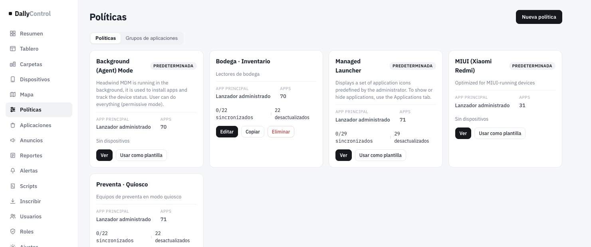
Figura 10. Pantalla «Políticas». La barra de cada tarjeta indica cuántos equipos ya aplicaron la última versión.
Crear, copiar y eliminar
Tarea
Cómo
Crear
Nueva política. Elija Política en blanco o una plantilla predeterminada, complete el editor y pulse Guardar.
Copiar
Copiar en la tarjeta, escriba el Nombre nuevo, Copiar.
Editar
Editar. Las plantillas predeterminadas son de solo lectura: use Usar como plantilla.
Eliminar
Eliminar. El servidor lo rechaza mientras haya equipos que la usen.
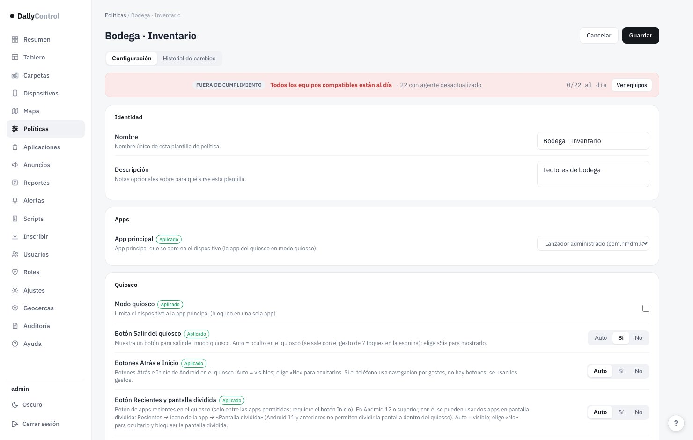
Figura 11. Editor de una política. El chip «Aplicado» marca los ajustes que el agente hace cumplir.
Secciones del editor
Sección
Qué define
Identidad
Nombre único y descripción.
Apps
App principal: la que abre el quiosco.
Quiosco
Modo quiosco y sus botones (capítulo 9).
Red
Wi-Fi, Bluetooth y Reporte de ubicación.
Seguridad
Contraseña para salir del quiosco.
Restricciones
Almacenamiento USB y capturas de pantalla (capítulo 10).
Pantalla
Colores y tamaño de íconos del quiosco.
Actualizaciones
Actualizaciones de Android: predeterminado, de inmediato, programadas en una franja, o aplazadas 30 días.
Apps permitidas
Aplicaciones que la política instala y mantiene (capítulo 8).
Marca del quiosco
Logos, fondo, serial y botón de soporte. Solo con quiosco.
Grupos de aplicaciones
Grupos cuyas aplicaciones se instalan con esta política.
Funciones del dispositivo, navegador, apps y ubicación
Funciones del quiosco, compartir datos, cuentas de Google, restablecimiento, instalación por el usuario, navegador, política de apps, redes Wi-Fi, nombre del dispositivo, frecuencia de ubicación y datos móviles.
Carpetas que usan esta política
Las carpetas a las que se aplica.
Los controles con tres estados ofrecen Auto, Sí y No; Auto deja el valor por defecto. El enlace Campos heredados, al final, agrupa campos que se guardan pero que el agente no aplica: no los use para configurar.
Asignar la política
A carpetas: en el editor, Carpetas que usan esta política; marque y guarde. O desde Carpetas.
A un equipo: en su ficha, Fijar en el dispositivo; o desde la lista, Cambiar política.
A toda la flota sin carpeta: política global, en Carpetas o Ajustes.
Cómo llega a los equipos y cómo se comprueba
Al guardar, cada equipo aplica la política en su próximo reporte, normalmente en segundos si está en línea. Si el cambio toca el quiosco, la consola pide confirmación con Guardar y aplicar. La tarjeta de cumplimiento, arriba del editor, dice Al día o Fuera de cumplimiento, y Ver equipos lista los que faltan y por qué. El reporte Incumplimiento da la misma información para toda la flota.
La pestaña Historial de cambios registra quién guardó la política, cuándo y qué cambió, campo por campo.
8 · Aplicaciones
La biblioteca guarda las aplicaciones; la política decide dónde se instalan
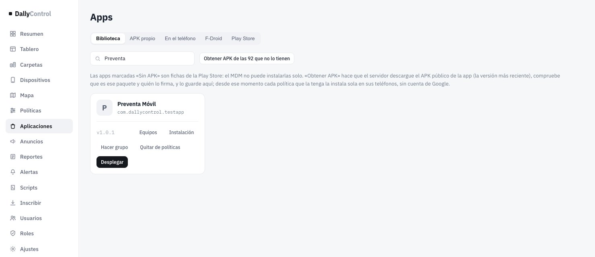
Figura 12. Menú «Aplicaciones», pestaña «Biblioteca».
La pantalla tiene cinco pestañas de origen: Biblioteca, APK propio, En el teléfono, F-Droid y Play Store.
Subir una aplicación propia
Abra la pestaña APK propio.
Opcional: escriba un nombre en Nombre de esta versión (opcional).
Suelte el archivo en la zona de arrastre o haga clic para buscarlo. Se aceptan archivos .apk y paquetes divididos .xapk, .apks, .apkm o .zip. La consola completa sola el paquete y la versión.
Los archivos de 50 MB o más se suben por partes: la consola muestra «Parte 3 de 7» con el avance. Si se corta la conexión, elija de nuevo el mismo archivo y la subida continúa donde quedó.
Pulse Agregar a la Biblioteca, o Desplegar… para instalarla de una vez.
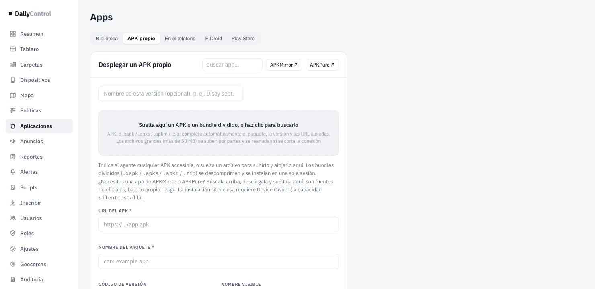
Figura 13. Pestaña «APK propio» con la zona de arrastre.
El tamaño máximo es 4 GB. Los archivos .aab no se pueden instalar: genere un APK universal. Si la firma de una versión nueva difiere de la anterior, la consola lo advierte antes de agregarla; los equipos que ya tienen la aplicación rechazarían esa versión.
Versiones
Una versión con código mayor reemplaza a la anterior: las políticas que usan la aplicación instalan la nueva sola.
Hacer grupo convierte la aplicación en un grupo de versiones. Cada política usa la versión que se le asigne con Asignar a políticas, y subir otra ya no cambia las políticas solas. Sirve para mantener una versión por cliente.
Asignar una versión más vieja hace que los equipos desinstalen la nueva e instalen esa: se borran los datos de la aplicación en esos equipos. La consola pide confirmarlo.
Otras fuentes
Pestaña
Para qué
En el teléfono
Registrar una aplicación que el equipo ya trae, para permitirla en el quiosco. No instala nada.
Play Store
Agregar una ficha de la tienda. Queda con el chip Sin APK hasta que Obtener APK descargue el archivo público al servidor.
F-Droid
Buscar aplicaciones de ese catálogo; el equipo las descarga de allí.
Instalar en la flota
Objetivo
Cómo
Que quede siempre, también en equipos nuevos
En la política, Apps permitidas, Agregar desde la biblioteca o Subir APK, acción Instalar, y Guardar.
Instalarla ahora en equipos o carpetas
En la biblioteca, Desplegar: pestañas Instalar en dispositivos, Carpetas o Agregar a una política.
Un conjunto de aplicaciones para varias políticas o carpetas
Políticas, pestaña Grupos de aplicaciones, Nuevo grupo. Asígnelo a carpetas o políticas.
Seguir la instalación
Figura 14. Ventana «Instalación en la flota».
El botón Instalación abre Instalación en la flota. Muestra cuántos equipos están en la versión objetivo, pendientes, retenidos y fallidos, y el motivo de cada falla. El servidor reintenta solo las fallas temporales; Reintentar reenvía las demás cuando se corrige la causa. Exportar CSV entrega la lista. Los motivos se explican en «Solución de problemas».
Quitar una aplicación
Acción
Efecto
En la política, acción Desinstalar y Guardar
La desinstala en los equipos de esa política.
✕ en la política, o Quitar de políticas
Deja de gestionarla. No la desinstala.
Equipos, seleccionar y Desinstalar en N
La desinstala en los equipos elegidos. Pide escribir DESINSTALAR.
Ficha del equipo, pestaña Aplicaciones, Desinstalar
La desinstala en ese equipo.
Si una política todavía incluye la aplicación para instalar, la próxima sincronización la vuelve a instalar.
9 · Quiosco
El quiosco limita el equipo a las aplicaciones de trabajo
Con Modo quiosco activo, el equipo solo muestra las aplicaciones que la política permite. Se configura en la política y se puede activar o quitar por equipo.
Una aplicación o varias
Resultado
Cuándo ocurre
Una sola aplicación
Hay App principal, es la única aplicación visible en quiosco y no hay Funciones del quiosco marcadas.
Varias aplicaciones, en una pantalla de inicio propia
En cualquier otro caso: más de una aplicación con En quiosco, un grupo de aplicaciones en quiosco, o alguna función marcada (Teléfono, Contactos, Mensajes, Navegador, Cámara, Mapas).
Configurar el quiosco en la política
En Apps permitidas, agregue las aplicaciones con acción Instalar. La casilla En quiosco decide si cada una aparece en la pantalla del quiosco.
En App principal elija la aplicación que se abre al entrar.
Marque Modo quiosco.
En Seguridad, escriba la contraseña para salir del quiosco.
Ajuste los botones visibles (tabla siguiente) y, si quiere, la Marca del quiosco.
Pulse Guardar y confirme con Guardar y aplicar.
Ajuste
En Auto
Botón Salir del quiosco
Oculto. Se sale con 7 toques seguidos en la esquina superior derecha. «Sí» muestra un botón.
Botones Atrás e Inicio
Visibles.
Botón Recientes y pantalla dividida
Visible. Requiere el botón Inicio.
Notificaciones
Permitidas.
Hora, batería y señal
Visible.
Pantalla de bloqueo
Sin pantalla de bloqueo en el quiosco.
Ajustes rápidos del quiosco
Activos: brillo, volumen, Wi-Fi y Bluetooth.
Configuración recomendada
Defina siempre la contraseña de salida. Sin ella, el gesto o el botón sacan del quiosco sin pedir nada.
Deje Botón Salir del quiosco en Auto: el gesto de 7 toques no es visible para el usuario.
Ponga un Número de soporte en la marca: el quiosco muestra un botón para llamar sin habilitar el teléfono completo.
En equipos expuestos a robo, defina Antirrobo: clave para apagar (Android 9 o superior). Bloquea además el restablecimiento desde Ajustes.
Bloquee Instalación de apps por el usuario y, si el equipo no debe compartir internet, Compartir datos (zona Wi‑Fi).
Pruebe la política en un equipo de cada versión de Android antes de aplicarla a toda una carpeta.
Activar o quitar el quiosco en un equipo
En la ficha, pestaña Control: Quitar quiosco lo saca para una tarea de soporte y Activar quiosco lo devuelve. Personalizar… abre Entrar en quiosco, donde se eligen aplicaciones, botones visibles, Modo de salida (Gesto, Botón visible o Solo remoto) y Contraseña de salida solo para ese equipo. Para varios equipos: Acciones, grupo Kiosco, Activar modo kiosco…. La casilla En el kiosco de la pestaña Aplicaciones muestra una aplicación solo en ese equipo.
Límites conocidos
En Android 16 el agente usa un quiosco propio, sin el bloqueo del sistema: los interruptores de botones no se aplican en esa versión.
Ningún sistema de administración impide el apagado forzado ni el restablecimiento con los botones físicos.
Si la aplicación principal se cierra más de 3 veces en un minuto, el agente no la reabre sola y muestra un botón para abrirla.
Llega con la integración del quiosco reforzado
La siguiente versión hace obligatoria la contraseña de salida y la genera en las políticas que no la tengan, agrega una espera creciente tras intentos fallidos, bloquea los Ajustes del sistema dentro del quiosco y muestra el estado del refuerzo en la ficha. Este capítulo se actualizará entonces.
10 · Restricciones de hardware
La política controla radios, almacenamiento externo y capturas
Estas restricciones se definen en el editor de la política y se aplican a todos sus equipos.
Ajuste
Dónde
Opciones
Wi‑Fi
Sección Red
Auto, Sí, No
Bluetooth
Sección Red
Auto, Sí, No
Almacenamiento USB
Sección Restricciones
Auto, Sí, No
Bloquear capturas de pantalla
Sección Restricciones
Auto, Sí, No
Compartir datos (zona Wi‑Fi)
Funciones del dispositivo
Permitir (ícono en el quiosco), Bloquear
Instalación de apps por el usuario
Funciones del dispositivo
Permitida, Bloquear (solo la consola instala)
Cuentas de Google
Funciones del dispositivo
Se pueden agregar, No permitir agregar; dominios permitidos
Restablecimiento de fábrica
Funciones del dispositivo
Permitido, Bloquear desde Ajustes
Compartir datos se puede cambiar para un equipo desde su pestaña Control: Permitir, Bloquear o Según política. Con capturas bloqueadas, el control remoto tampoco ve la pantalla.
Llega con la integración de hardware y puertos
La siguiente versión agrega la sección «Hardware y puertos» con 23 funciones (entre ellas cámara, micrófono, depuración USB, datos por USB, tarjeta SD, NFC, modo avión, fecha y hora), cada una con «Sin gestionar», «Permitir» o «Bloquear», y una pestaña «Restricciones» en la ficha con el resultado real en cada equipo. Este capítulo se ampliará entonces.
Permisos de las aplicaciones
Al inscribir un equipo, el agente fija la concesión automática de permisos para las aplicaciones administradas: las aplicaciones que instala la política reciben sus permisos sin que el usuario deba aceptarlos. En esta versión no hay reglas por aplicación ni por permiso.
Llega con la integración de permisos por aplicación
La siguiente versión agrega en la política una regla por defecto (conceder, preguntar o denegar) y la sección «Permisos por app» con reglas por permiso y accesos especiales, más una pestaña «Permisos» en la ficha con el estado real y exportación a CSV.
11 · Wi-Fi y datos móviles
La política entrega las redes Wi-Fi y decide qué aplicaciones usan datos móviles
Redes Wi-Fi
En el editor de la política, tarjeta Funciones del dispositivo, navegador, apps y ubicación, vaya a Redes Wi‑Fi.
Pulse + Agregar red y complete el nombre de la red (hasta 32 caracteres), la contraseña y la seguridad: WPA/WPA2, WEP o Abierta.
Pulse Guardar. Los equipos guardan la red y se conectan solos cuando está al alcance.
El Wi-Fi del QR de inscripción solo sirve para la puesta en marcha. Para que la red quede en todos los equipos, agréguela también aquí.
Llega con la integración de Wi-Fi corporativo
La siguiente versión agrega WPA3, redes empresariales 802.1X con certificados, red oculta, prioridad, proxy y dirección fija por red, bloqueos de Wi-Fi con salvaguarda para no dejar un equipo sin red, y el estado de cada red en la ficha del equipo.
Datos móviles por aplicación
En la misma tarjeta, sección Datos móviles:
Ajuste
Qué hace
Datos móviles por aplicación
Sin restricción por app; Lista negra: solo Wi‑Fi (las aplicaciones listadas no usan datos móviles); o Lista blanca: solo estas apps (solo las listadas los usan).
Límite de datos del equipo
Tope en MB para todo el equipo en el periodo.
Límite de datos por app
Tope por aplicación, con + Agregar límite.
Periodo de los límites
Mensual, con día de corte del 1 al 28, o Diario.
Umbral de aviso
Porcentaje del límite que genera la alerta «cerca del límite». Vacío equivale a 80 %.
Apps esenciales
Aplicaciones que nunca pierden los datos móviles.
Mecanismo de bloqueo
Automático (recomendado): desde Android 9 usa la restricción del sistema; en Android 7 y 8, una VPN local del agente. Android 6 no es compatible.
En la ficha del equipo, pestaña Uso de apps, la tarjeta de datos móviles muestra la política vigente, el mecanismo en uso, el consumo frente al límite y las aplicaciones sin datos móviles con su motivo. Ajustar en este equipo permite excepciones para ese equipo y Volver a la política las quita.
Los reportes Datos móviles y Datos móviles: uso vs. límite resumen el consumo de la flota. Las alertas «Datos móviles: cerca del límite» y «Datos móviles: límite superado» se pueden enviar por correo (capítulo 13).
12 · Ubicación y geocercas
El mapa muestra dónde está la flota; las geocercas avisan cuando un equipo cruza un límite
Activar la ubicación
En la política: Reporte de ubicación en GPS o Red (Wi‑Fi/celular), y Ubicación cada con el intervalo en minutos, de 1 a 1.440. GPS es más preciso y gasta más batería. Para un equipo, las órdenes Ubicación: precisa y Ubicación: ahorro de batería cambian el modo desde su pestaña Control.
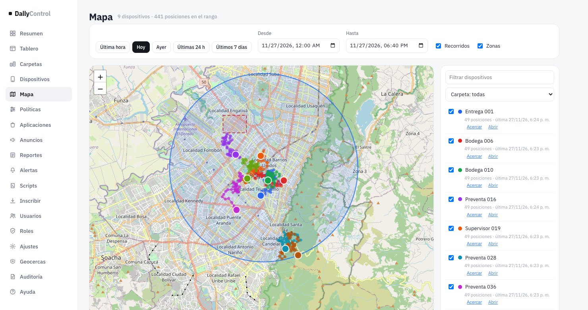
Figura 15. Pantalla «Mapa» con las posiciones de la flota en el rango elegido.
Mapa de la flota
Rangos rápidos: Última hora, Hoy, Ayer, Últimas 24 h, Últimos 7 días, o fechas en Desde y Hasta. El rango máximo es de 31 días.
Recorridos dibuja el trayecto de cada equipo y Zonas, las geocercas.
El deslizador de hora coloca cada equipo donde estaba en ese momento.
En el lateral, Filtrar dispositivos y el selector de carpeta acotan la lista y el mapa. Acercar centra un equipo y Abrir va a su ficha.
En la ficha de un equipo, la pestaña Ubicación guarda su historial, con rangos de hasta 90 días, exportación a Excel o CSV y la casilla para ocultar posiciones de baja precisión.
Crear una geocerca
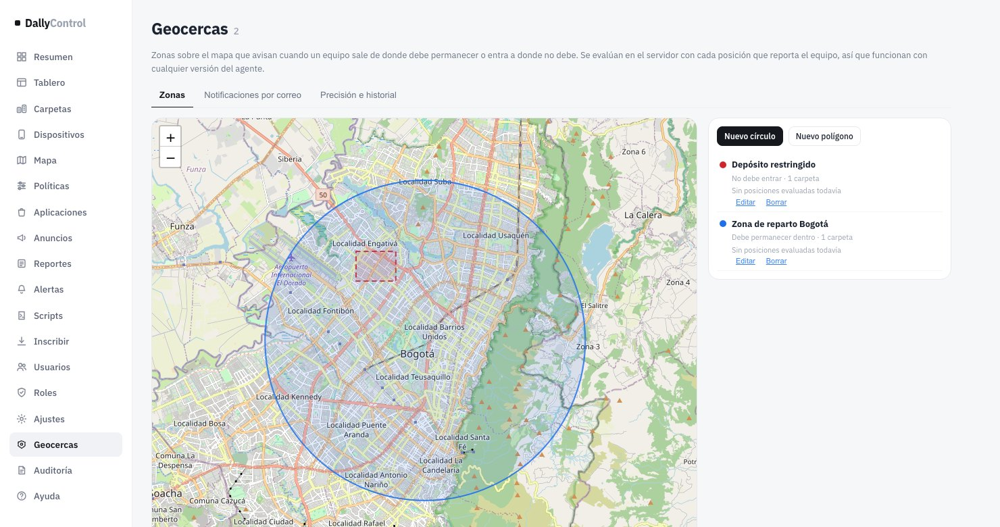
Figura 16. Pantalla «Geocercas», pestaña «Zonas». Línea continua: debe permanecer dentro; punteada: no debe entrar.
En Geocercas, pestaña Zonas, pulse Nuevo círculo o Nuevo polígono.
Dibuje en el mapa: un clic para el centro del círculo, o un clic por vértice del polígono, mínimo 3. El radio admite de 20 metros a 500 kilómetros.
Escriba el Nombre y elija la Regla: Debe permanecer dentro (alerta al salir) o No debe entrar (alerta al entrar).
En Aplica a, marque Toda la flota, carpetas (incluyen sus subcarpetas) o equipos sueltos.
Opcional: desmarque Siempre en Horario y elija días y horas; fuera del horario no se alerta.
Opcional: Frecuencia de ubicación hace que los equipos de la zona reporten al menos con ese intervalo; Avisar por correo a agrega destinatarios propios de la zona.
Pulse Guardar zona.
Cómo se evalúan
El servidor evalúa cada posición que llega, así que funciona con cualquier versión del agente. Un cruce se da por cierto cuando la posición es precisa, queda más allá del borde con su margen y lo confirman varias posiciones seguidas. Con la confirmación de 2 posiciones, la alerta llega entre 1 y 2 intervalos después del cruce. Si el equipo ya incumple al crear la zona, la alerta sale en ese momento.
La pestaña Precisión e historial ajusta esos criterios: Precisión máxima aceptada (100 metros por defecto), Margen del borde (15 metros), Posiciones de confirmación (2) y Retención del historial de ubicación. Solo un administrador completo puede cambiarlos.
13 · Alertas y correos
Las alertas se revisan en la consola y, si hay correo configurado, llegan a los destinatarios
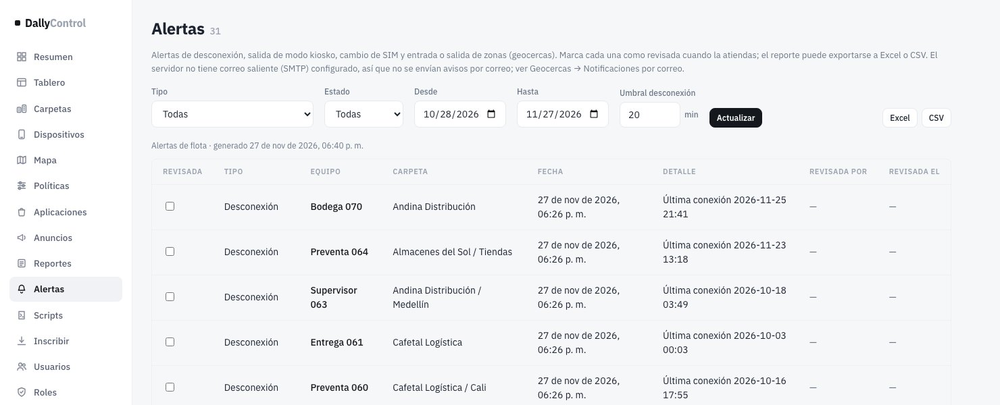
Figura 17. Pantalla «Alertas» con filtros por tipo, estado y fechas.
Tipos de alerta
Tipo
Cuándo se genera
Desconexión
El equipo no reporta por más del Umbral de desconexión, 20 minutos por defecto.
Salida de kiosko
El equipo salió del quiosco.
Cambio de SIM
La SIM se retiró, se insertó o se cambió.
Salida de zona · Entrada a zona
El equipo cruzó el límite de una geocerca.
Datos móviles: cerca del límite · límite superado
El consumo alcanzó el umbral de aviso o el límite de la política.
Revisar las alertas
En Alertas, elija Tipo, Estado (Pendientes o Revisadas) y fechas, y pulse Actualizar. Los filtros solo se aplican al pulsarlo.
Abra el equipo desde la columna Equipo para ver el contexto.
Marque la casilla Revisada al atenderla. Quedan registrados quién la revisó y cuándo.
Excel o CSV exportan el resultado.
Enviar las alertas por correo
En Geocercas, abra la pestaña Notificaciones por correo. El primer renglón dice si el servidor tiene correo saliente configurado.
Elija la Carpeta (o toda la flota), escriba los Correos (separados por coma) y marque los tipos en Alertas (ninguna marcada = todas).
Pulse Agregar destinatarios. Una regla sobre una carpeta cubre sus subcarpetas.
Compruebe con Probar el correo y Enviar prueba.
Cada destinatario recibe como máximo un correo por intervalo, 10 minutos por defecto, con todas las alertas ocurridas desde el anterior; las repetidas del mismo equipo se agrupan en una línea. Un destinatario nuevo solo recibe lo ocurrido desde que se agregó. El intervalo se cambia en Precisión e historial.
El correo saliente lo configura el operador del servidor. Sin él, las alertas se registran y se ven en la consola, pero no se envía ningún correo. Ver «Operación, soporte y nivel de servicio».
14 · Comandos remotos
Cada orden queda registrada con su estado, su autor y su tiempo de entrega
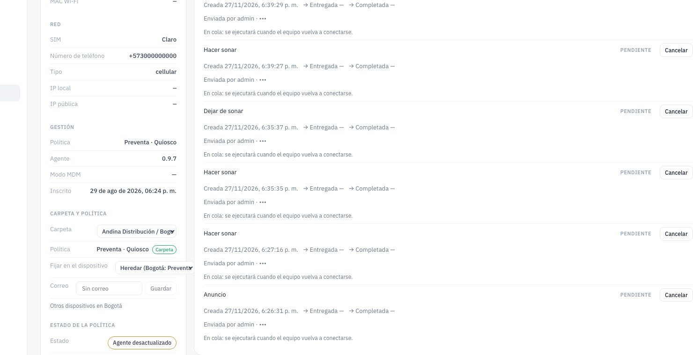
Figura 18. Pestaña «Control» de un dispositivo: historial de órdenes con su estado y el botón «Cancelar».
Las órdenes se envían desde la pestaña Control de la ficha. Están agrupadas por su efecto sobre el usuario del equipo.
Grupo
Acción
Qué hace
Seguras
Mensaje en pantalla de bloqueo
Deja un texto en la pantalla de bloqueo. Vacío lo borra.
Enviar mensaje
Muestra un mensaje con título en el equipo.
Hacer sonar · Dejar de sonar
Suena 30 segundos para ubicarlo; la segunda lo calla.
Tamaño de letra · zoom
Ajusta la letra o el tamaño de pantalla.
Abrir app
Abre la aplicación del paquete indicado.
Borrar caché de las apps
Android 11 o superior; la persona toca Aceptar.
Ubicación: precisa · ahorro de batería
Cambia el modo de ubicación.
Interrumpen
Bloquear
Bloquea la pantalla de inmediato, sin pedir confirmación.
Reiniciar
Reinicia el equipo tras Confirmar.
Cambiar clave del dispositivo
Fija una clave de desbloqueo de 4 caracteres o más; vacía la quita.
Destructivas
Restablecer de fábrica (borrar todo)
Borra el equipo por completo. No se puede deshacer.
Los grupos «Interrumpen» y «Destructivas» solo aparecen para quien tiene el permiso de acciones que interrumpen.
Bloquear y localizar un equipo extraviado
Pulse Bloquear. La orden no vence: si el equipo está apagado, se bloquea al encender.
Envíe Mensaje en pantalla de bloqueo con el dato de contacto.
Envíe Ubicación: precisa y siga el equipo en la pestaña Ubicación.
Si está cerca, Hacer sonar ayuda a encontrarlo.
Llega con la integración de protección y borrado remoto
La siguiente versión reúne estos pasos en un «Modo perdido» con mensaje y teléfono de contacto, sonido, posición cada minuto y borrado automático opcional; y agrega al borrado remoto opciones para conservar la protección de restablecimiento, borrar la tarjeta SD y las eSIM.
Borrar un equipo
En Control, grupo Destructivas, pulse Restablecer de fábrica (borrar todo).
En el campo Escribe BORRAR para confirmar, escriba BORRAR en mayúsculas y pulse Confirmar.
La orden no vence y se reentrega hasta que el equipo responda. Tras ejecutarse, la ficha muestra la insignia Borrado con fecha y autor.
El borrado nunca se envía a varios equipos a la vez: se hace equipo por equipo.
Estados y cancelación
El historial, al final de la pestaña, muestra cada orden con los pasos Creada, Entregada y Completada, la latencia de cada uno, quién la envió y cuántas veces se entregó.
Estado
Significado
Pendiente
En cola; se ejecutará cuando el equipo vuelva a conectarse.
Entregado
El equipo la recibió y aún no confirma.
Ejecutado
El equipo confirmó el resultado.
Fallido · No soportado
El equipo no pudo, o su agente no conoce la orden.
Vencido
Pasó el plazo de esa orden.
Cancelado
Un usuario la canceló.
Cancelar aparece en las órdenes Pendiente y Entregado. Si la orden ya se entregó, la consola advierte que cancelarla evita que se reenvíe, pero que el equipo pudo haberla ejecutado.
Acciones masivas
Desde Dispositivos (botón Acciones sobre una selección, o Acciones en la carpeta con un filtro de carpeta) y desde Carpetas (Ejecutar acción) se abre Ejecutar acción en…. Agrupa las acciones en Acciones, Disruptivas, Aplicaciones, Actualizaciones, Control remoto y Kiosco. Las que llevan parámetros piden marcar la casilla de confirmación antes de Ejecutar. Los equipos sin enlace reciben la orden al reconectarse; los que están fuera del alcance del usuario se omiten.
15 · Control remoto
La pestaña «Remoto» muestra la pantalla del equipo y permite manejarlo
Preparar el equipo
La primera vez, la pestaña Remoto ofrece Instalar soporte remoto: el agente descarga el componente de pantalla remota desde el servidor y lo deja listo, sin cable. Necesita Android 7 o superior. Para varios equipos: Acciones, grupo Control remoto, Instalar soporte remoto.
Nivel
Qué exige
Solo ver
El componente instalado. La primera vez, el teléfono pide permiso para compartir la pantalla y quien lo tenga toca «Iniciar ahora».
Ver y controlar
Además, el servicio de accesibilidad del soporte remoto activo en el teléfono. Abrir el ajuste en el teléfono lleva a esa pantalla. La inscripción con computador lo deja activo sin tocar el equipo.
Iniciar una sesión
En la ficha, abra Remoto y pulse Ver y controlar o Solo ver.
Espere la conexión. Con el equipo en línea toma segundos; si está bloqueado y en ahorro de batería puede tardar minutos. Activar Siempre conectado lo evita.
Use la pantalla. La barra inferior envía Atrás, Inicio, Recientes, volumen, Menú de apagado y Girar pantalla. Pantalla completa y Abrir en otra pestaña amplían el visor.
Pulse Terminar sesión. El equipo deja de compartir su pantalla.
El chip Cifrado (TLS) confirma que la pantalla viaja cifrada.
La sesión se cierra sola al salir de la pestaña y tras 15 minutos sin actividad.
El conmutador de quiosco está en la misma pestaña, para quitarlo durante el soporte y devolverlo al terminar.
Cada sesión queda en la auditoría, módulo Control remoto.
Llega con la integración del soporte remoto con voz
La siguiente versión agrega la captura desde el propio agente, sin avisos en Android 11 o superior, llamada de voz con el usuario, chat, portapapeles, envío y exploración de archivos, grabación de la sesión y un menú «Sesiones de soporte» con el historial. Este capítulo se ampliará entonces.
16 · Anuncios y scripts
Un anuncio llega a muchos teléfonos; un script repite una secuencia de acciones
Enviar un anuncio
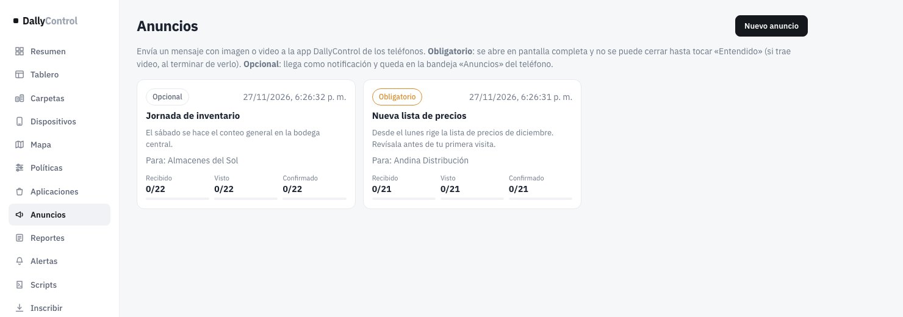
Figura 19. Pantalla «Anuncios» con el avance de recibido, visto y confirmado.
En Anuncios pulse Nuevo anuncio.
Escriba Título y Mensaje. Opcional: adjunte una imagen o un video de hasta 95 MB.
Elija el modo. Opcional: llega como notificación y queda en la bandeja «Anuncios» del teléfono. Obligatorio: se abre en pantalla completa y no se cierra hasta tocar «Entendido»; con video, al terminar de verlo.
Elija la Vigencia y, en Para quién, Carpetas, Dispositivos o Todos.
Pulse Enviar a N. Los equipos apagados lo reciben al conectarse.
Al abrir un anuncio enviado se ve, por equipo, si está Pendiente, Recibido, Visto o Confirmado. Retirar anuncio lo quita de los teléfonos que ya lo tenían.
Scripts y acciones rápidas
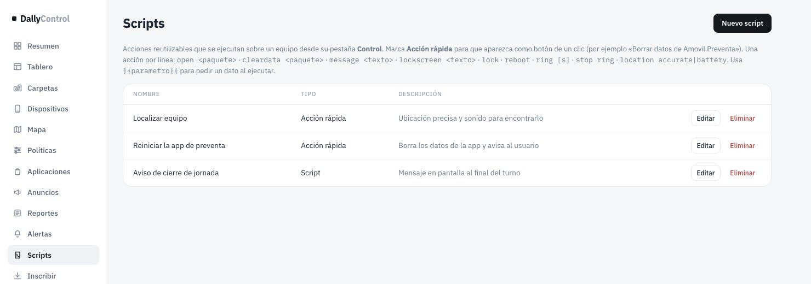
Figura 20. Pantalla «Scripts».
Un script es una lista de acciones, una por línea, que se ejecuta sobre un equipo desde su pestaña Control. Marcado como Acción rápida, aparece ahí como un botón de un clic.
En Scripts pulse Nuevo script y escriba Nombre y, si quiere, Descripción (opcional).
En Acciones escriba una acción por línea (tabla siguiente).
Para pedir un dato al ejecutar, use {{clave}} en una acción y defínalo con Añadir parámetro.
Marque Acción rápida (botón de un clic en el equipo) si corresponde y pulse Guardar.
Acción
Qué hace
open <paquete>
Abre una aplicación.
cleardata <paquete>
Borra los datos de una aplicación.
message <texto> · lockscreen <texto>
Muestra un mensaje, o lo deja en la pantalla de bloqueo.
ring [segundos] · stop ring
Hace sonar el equipo, o lo calla.
lock · reboot
Bloquea o reinicia. Exigen el permiso de acciones que interrumpen.
location accurate|battery
Cambia el modo de ubicación.
En la ficha, el panel Acciones rápidas lista los scripts guardados y el panel Script permite escribir uno sin guardarlo, con wait <segundos> para pausar entre pasos.
17 · Reportes e inventario
Cada reporte se consulta en pantalla, se exporta y se puede programar por correo
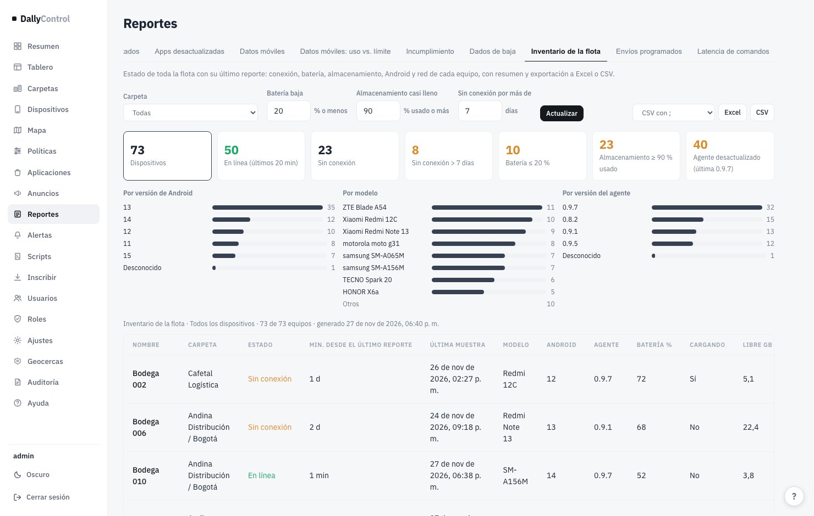
Figura 21. Menú «Reportes», pestaña «Inventario de la flota».
En Reportes, cada pestaña es un reporte. Ajuste sus filtros, pulse Actualizar y exporte con Excel o CSV.
Reporte
Qué lista
Inventario de la flota
Estado de cada equipo con su último reporte: conexión, batería, almacenamiento, Android y red.
Sin conexión
Equipos cuya última conexión supera los días indicados.
Retiro de SIM · SIM no coincide
Eventos de SIM en un rango; equipos cuyo número real difiere del esperado.
Apps desplegadas · Por app instalada
Despliegues por aplicación con éxitos y fallas; equipos que tienen ciertas aplicaciones.
Apps desactualizadas · Agentes desactualizados
Equipos con versiones distintas de la última.
Sin recibir comandos · Latencia de comandos
Equipos con órdenes antiguas en cola; tiempos de entrega y ejecución por tipo de orden.
Datos móviles · uso vs. límite
Mayores consumidores y consumo frente a los límites de la política.
Incumplimiento
Equipos que no han aplicado la versión actual de su política.
Dados de baja
Equipos eliminados en un rango de fechas.
Inventario de la flota
Filtros: Carpeta, Batería baja, Almacenamiento casi lleno y Sin conexión por más de.
Las fichas (Dispositivos, En línea, Sin conexión, batería, almacenamiento, Agente desactualizado) filtran la tabla con un clic.
El Excel trae cuatro hojas: Resumen, Dispositivos, Carpetas y Conexiones de los últimos 30 días. El CSV trae la hoja de dispositivos, con el separador elegido.
Los datos son los del último reporte de cada equipo; la columna «Última muestra» dice de cuándo.
Programar un envío por correo
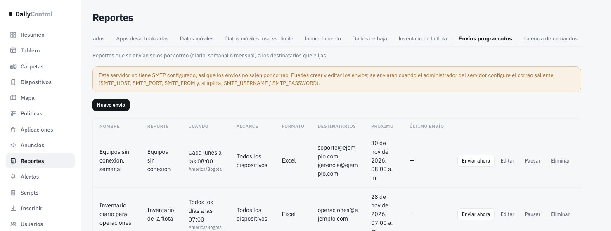
Figura 22. Pestaña «Envíos programados».
En Reportes, pestaña Envíos programados, pulse Nuevo envío.
Escriba el Nombre y elija el Reporte y la Carpeta.
Elija la Frecuencia (Diaria, Semanal o Mensual), el día si aplica y la Hora.
Elija el Formato y escriba los Destinatarios (correos separados por coma), hasta 20.
Pulse Guardar. Enviar ahora lo prueba sin mover el horario.
La tabla muestra Próximo y Último envío con su resultado. Pausar lo detiene sin borrarlo. Si el servidor estuvo detenido a la hora de un envío, lo manda una vez al volver. Requiere correo saliente configurado en el servidor.
18 · Auditoría
La auditoría responde quién hizo qué, cuándo y sobre qué equipo
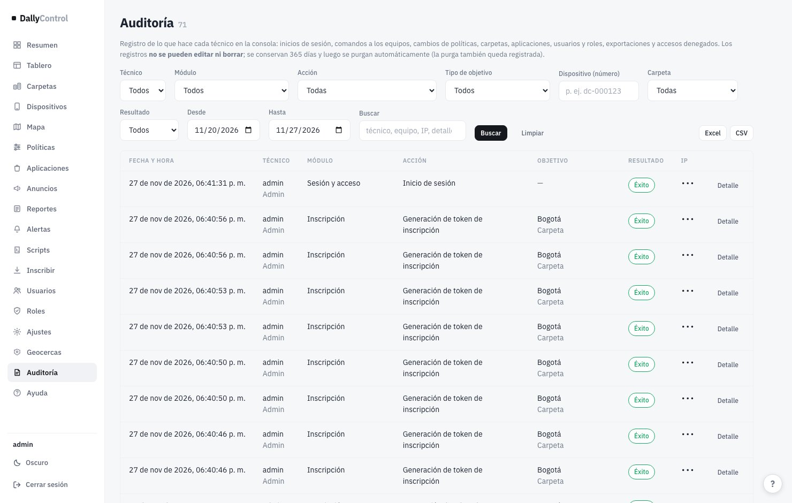
Figura 23. Pantalla «Auditoría» con sus filtros y la lista de registros.
Se registran los inicios de sesión, las órdenes a los equipos, los cambios de políticas, carpetas, aplicaciones, usuarios y roles, las exportaciones y los accesos denegados. Los registros no se pueden editar ni borrar. Las contraseñas y claves nunca se guardan en el registro.
Consultar
En Auditoría, combine los filtros: Técnico, Módulo, Acción, Tipo de objetivo, Dispositivo (número), Carpeta, Resultado (Éxito, Denegado, Error) y fechas. Por defecto muestra los últimos 7 días.
Pulse Buscar. Limpiar restablece los filtros.
Pulse Detalle en una fila: muestra qué cambió, con el valor de antes y el de después, los datos de la acción y su origen.
Excel o CSV exportan con los filtros aplicados, hasta 50.000 filas. La exportación también queda registrada.
Hay dos vistas parciales: Actividad, en la ficha de un equipo, y Actividad, en cada fila de Usuarios. Un usuario de carpetas con permiso de auditoría ve solo la actividad de sus carpetas y de sus usuarios.
Conservación e integridad
Retención: los registros más antiguos que el plazo se eliminan una vez al día. Por defecto 365 días; se puede fijar entre 30 y 3.650.
Verificar integridad: cada registro guarda la huella del anterior. La verificación recorre la cadena y responde «Cadena íntegra» o señala el registro alterado.
19 · Ajustes
Ajustes reúne los parámetros generales y la actualización del agente
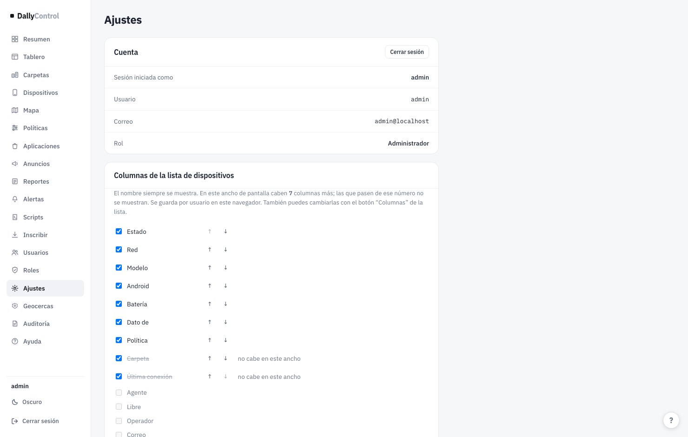
Figura 24. Pantalla «Ajustes».
Panel
Qué contiene
Cuenta
Usuario, correo y rol de la sesión.
Columnas de la lista de dispositivos
Columnas visibles y su orden, por usuario.
Servidor y conexión
Estado de la conexión y versión de la consola.
Actualizaciones
Versión en ejecución y última disponible del servicio.
Despliegue del agente
Envío de una versión nueva del agente por etapas.
Política global
Política por defecto para equipos sin carpeta ni política propia.
Resumen (tablero)
Intervalo de actualización y umbral de «sin conexión».
Apariencia
Tema claro u oscuro y densidad.
Actualizar el agente por etapas
Cuando hay una versión nueva, el panel Despliegue del agente muestra «Agente vX disponible». Pulse Desplegar….
Elija unos pocos equipos de prueba y pulse Iniciar canario.
Siga las barras Canario y Flota: actualizados, instalando y en cola.
Cuando los equipos de prueba estén actualizados y funcionen bien, pulse Extender a la flota y confirme.
Pulse Finalizar al terminar. Cancelar detiene el despliegue en la etapa de prueba.
Para un equipo suelto: ficha, pestaña Actualizaciones, Actualizar agente. Para una selección: Acciones, grupo Actualizaciones, Actualizar agente DallyControl. El reporte Agentes desactualizados lista los que faltan.
Dónde seguir. «Guía de enrolamiento» para inscribir equipos, «Solución de problemas» para cada mensaje de error y «Arquitectura y requisitos técnicos» para los permisos de red. Todos están en el menú Ayuda.